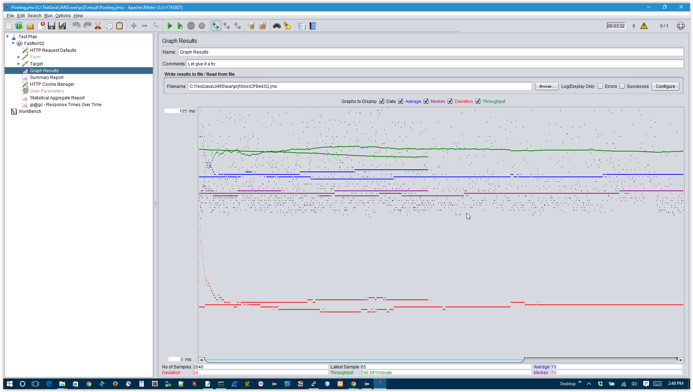
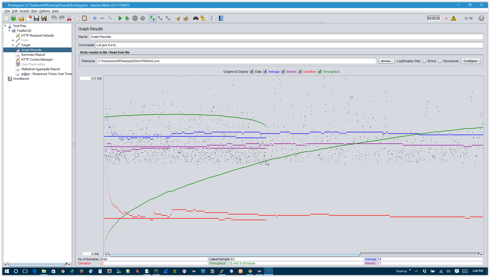
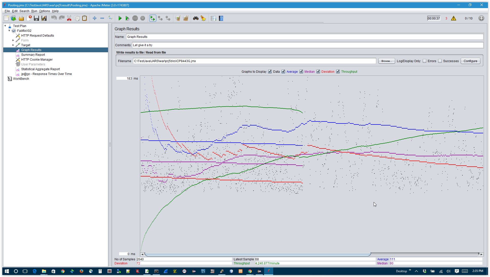
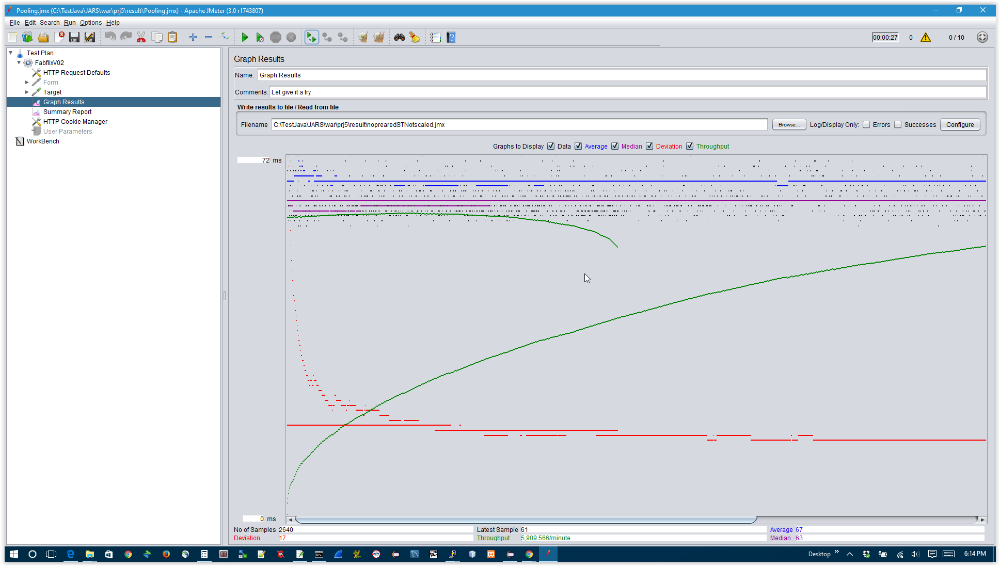
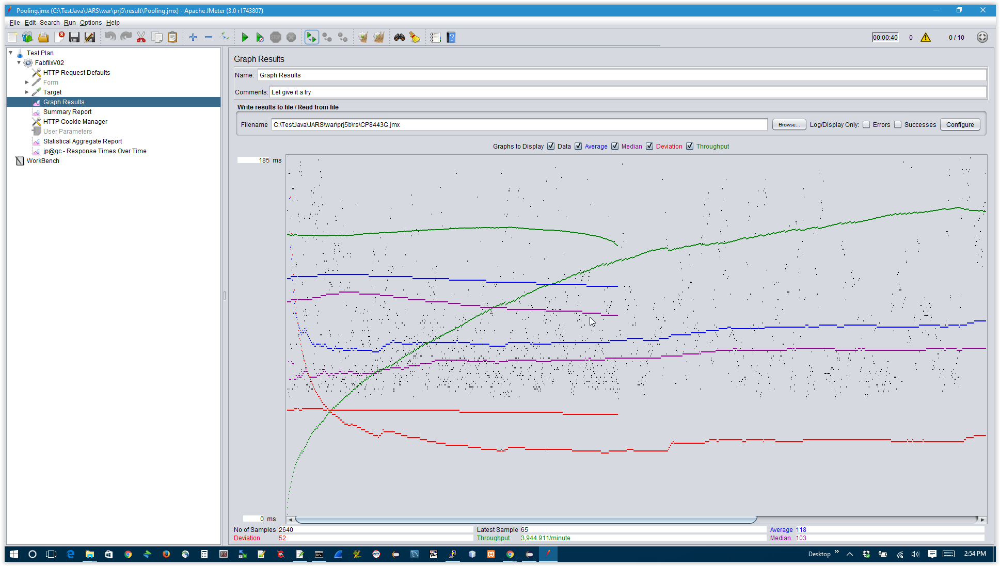
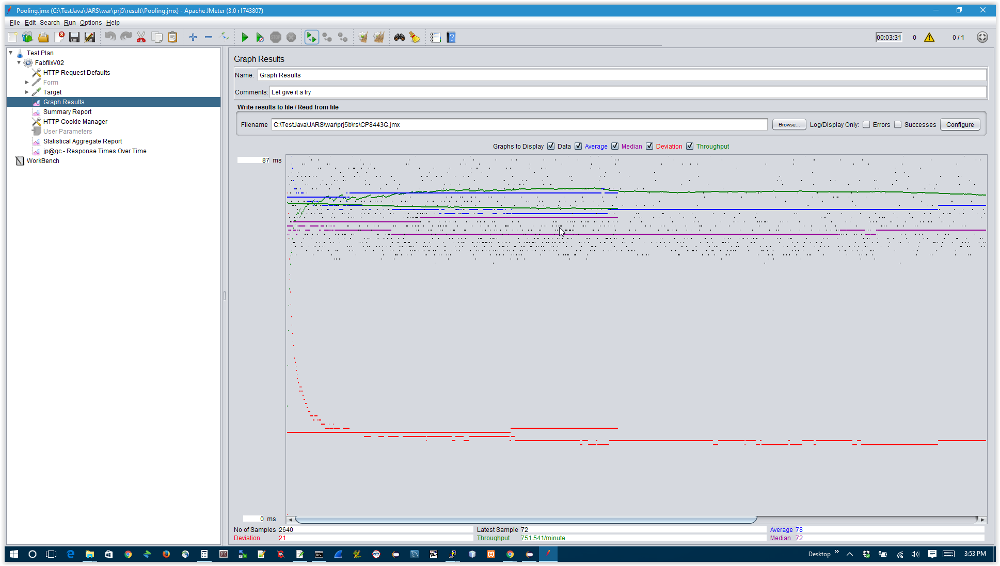
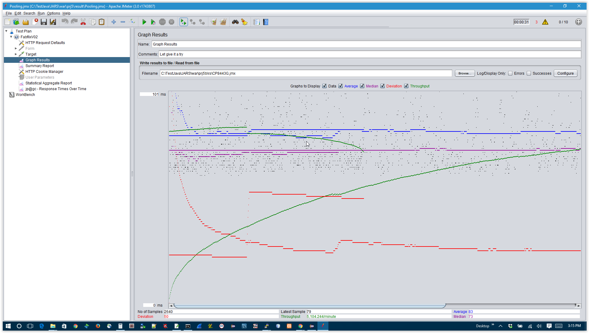
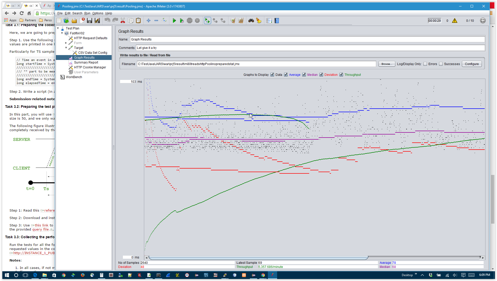

than the JDBC and servlet times combined
I think the benefit will be check in the long run

time wise compare to traditional database connection
| Single-instance version cases | Graph Results Screenshot | Average Query Time(ms) | Average Search Servlet Time(ms) | Average JDBC Time(ms) | Analysis |
| Case 1: HTTP/1 thread |  | 79.00 | 00.40 | 00.20 | The query time for 2640 searches take much longer than the JDBC and servlet times combined |
| Case 2: HTTP/10 threads |  | 78.00 | 00.31 | 00.16 | Takes less time to process JDBC almost half, than servlet |
| Case 3: HTTPS/10 threads |  | 111.0 | 00.35 | 00.18 | HTTPS connection yield times much greater than most of measurements |
| Case 4: HTTP/10 threads/No prepared statements |  | 67.00 | 00.37 | 00.24 | -- |
| Case 5: HTTP/10 threads/No connection pooling |  | 118.0 | 00.42 | 00.26 | Using connection pulling appears to be much faster, time wise compare to traditional database connection |
| Scaled version cases | Graph Results Screenshot | Average Query Time(ms) | Average Search Servlet Time(ms) | Average JDBC Time(ms) | Analysis |
| Case 1: HTTP/1 thread |  | 78.00 | 02.50 | 02.19 | The query time for 2640 searches take much longer than the JDBC and servlet times combined |
| Case 2: HTTP/10 threads |  | 83.00 | 02.52 | 02.26 | Takes less time to process JDBC than servlet |
| Case 3: HTTP/10 threads/No prepared statements |  | 78.00 | 02.88 | 02.41 | No much of difference, time wise, when comparing Prepared and no prepared statement, I think the benefit will be check in the long run |
| Case 4: HTTP/10 threads/No connection pooling | |
109.0 | 03.51 | 03.11 | Using connection pulling appears to be much faster, time wise compare to traditional database connection |